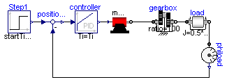

MotorDriveTest

Information
Extends from
DriveLib.MotorDrive
.
Parameters
Type
Name
Default
Description
Radius
r
0.5
Radius of load [m]
Mass
m
80
Mass of load [kg]
Modelica definition
model
MotorDriveTest
extends
DriveLib.MotorDrive
;
Modelica.Blocks.Sources.Step
Step1;
equation
connect
(Step1.y,positionerror.u1);
end
MotorDriveTest;
Automatically generated
Tue Feb 04 14:04:41 2014.